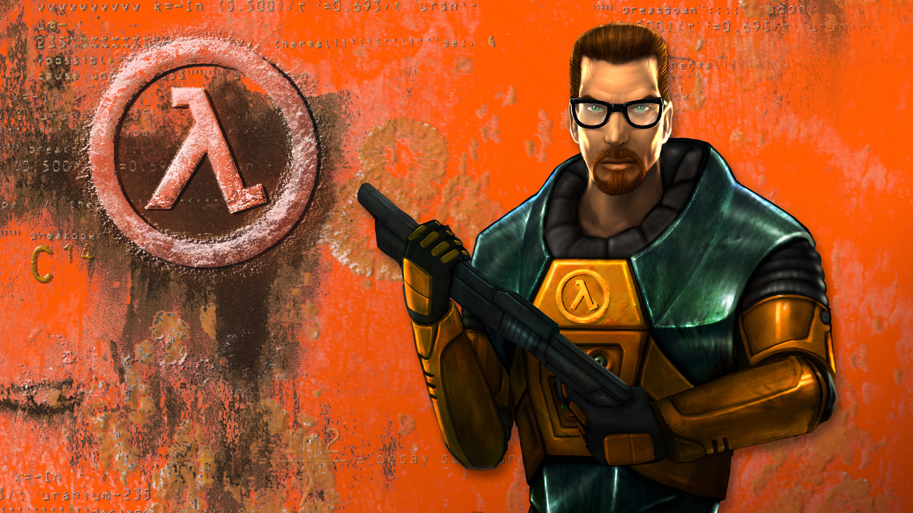
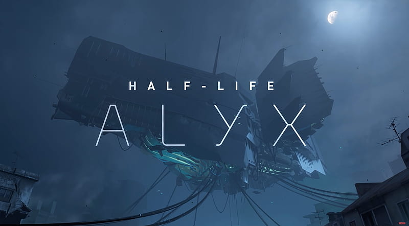
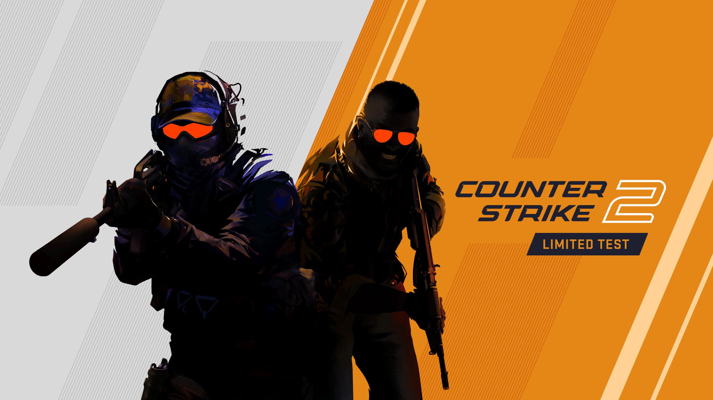

Iconic Games

Half-life 1998
Revolutionized storytelling in FPS games. Gabe oversaw development, game design and helped craft an immersive game play experience.
Learn More ->
Half life 2 (2004)
A master class of physics-based gameplay and world-building. The game won contless Game of the Year awards.
Learn more ->
Half life Alyx (2020)
A ground breakinng VR title that proved virtual reality could deliver a premium experience.
Learn more ->
Counter Strike
Originally a half life mod that became a globally knowm esports video game. It defined multilpayer gaming.
Learn more ->